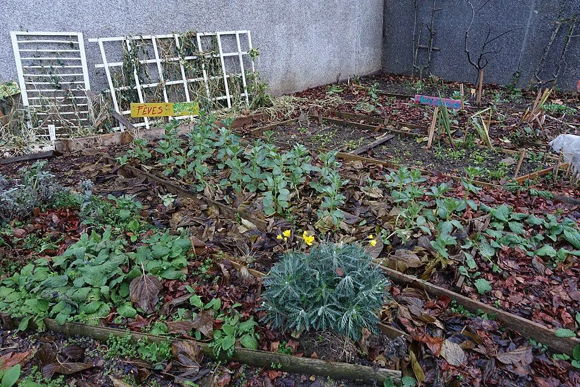

Clarté
Ne pas annoncer de chiffres d'impact tant qu'ils ne sont pas mesurés.
L'association
TVF rassemble les acteurs qui peuvent transformer un bien inutilisé en ressource pour les habitants : propriétaires, collectivités, entreprises, associations, bénévoles, financeurs et citoyens.
Analyse
Un bâtiment fermé, un logement dégradé, un commerce vide ou un stock de matériaux oublié ne sont pas seulement des problèmes immobiliers. Ce sont aussi des occasions manquées pour le logement, l'activité locale, l'insertion, la transition écologique et la qualité de vie. TVF veut créer le cadre qui permet de passer du constat à l'action.

Approche
Le projet est porté depuis Saint-Étienne avec une ambition nationale progressive. Cette phase demande de bâtir une méthode crédible, des documents solides, des conventions claires et des premiers partenariats réels avant toute communication de résultats.
Repères
TVF avance avec prudence et exigence.
Ne pas annoncer de chiffres d'impact tant qu'ils ne sont pas mesurés.
Documenter les décisions, conventions, ressources et projets.
Aider les politiques publiques et les acteurs locaux sans les remplacer.
Orienter chaque action vers un bénéfice concret pour le territoire.